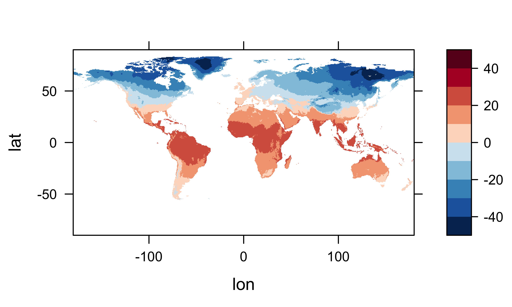
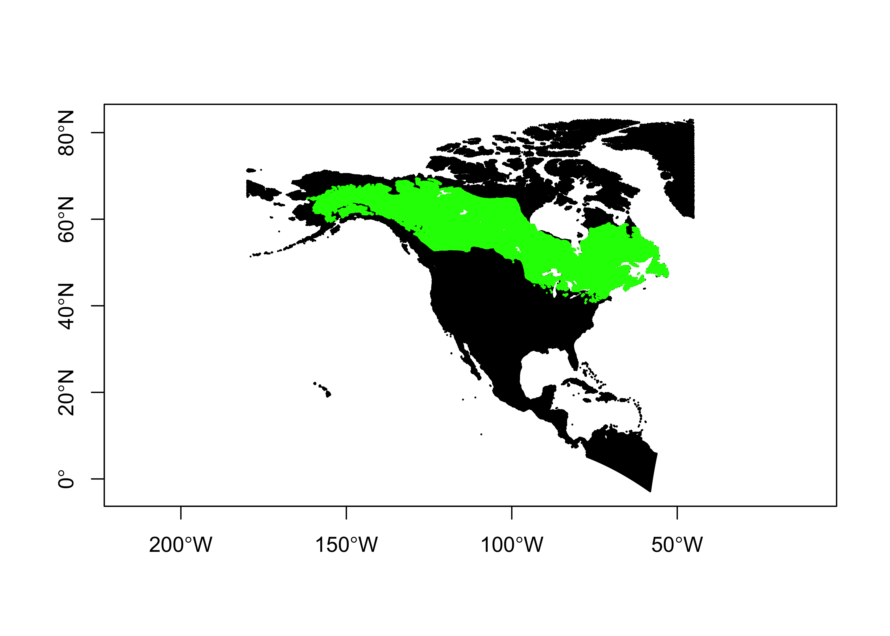
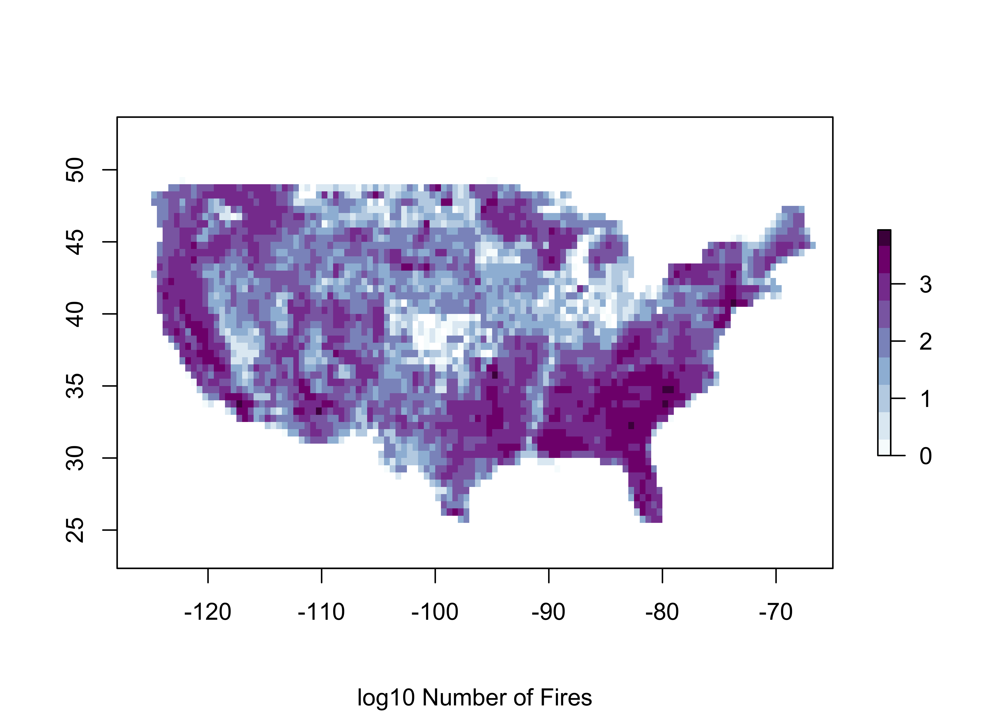
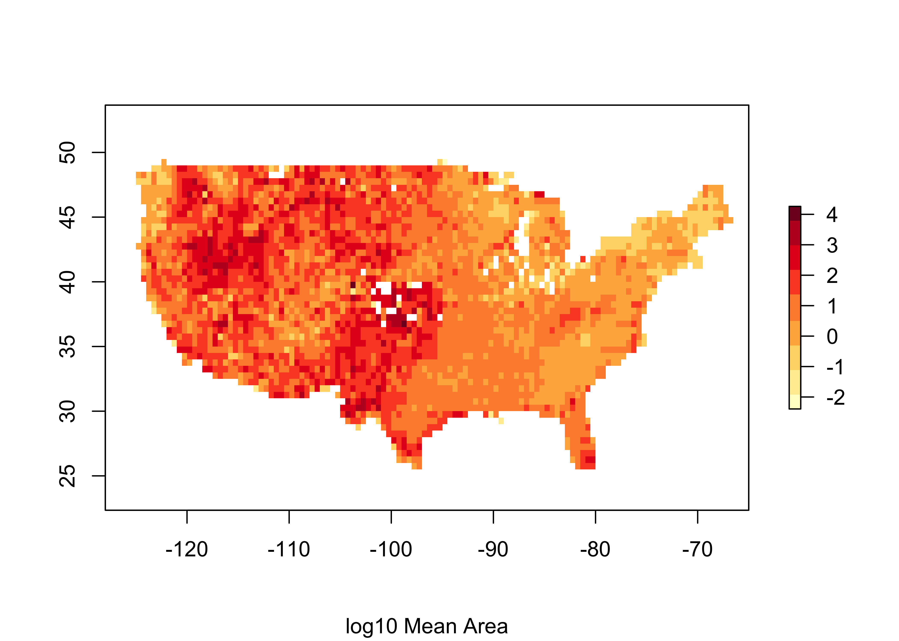
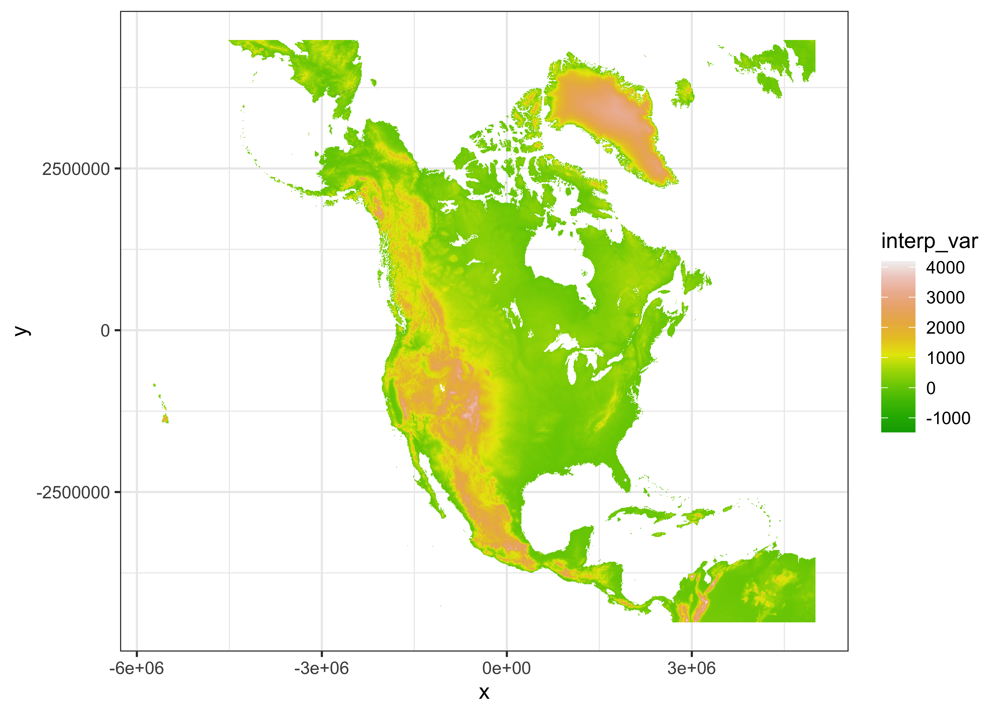
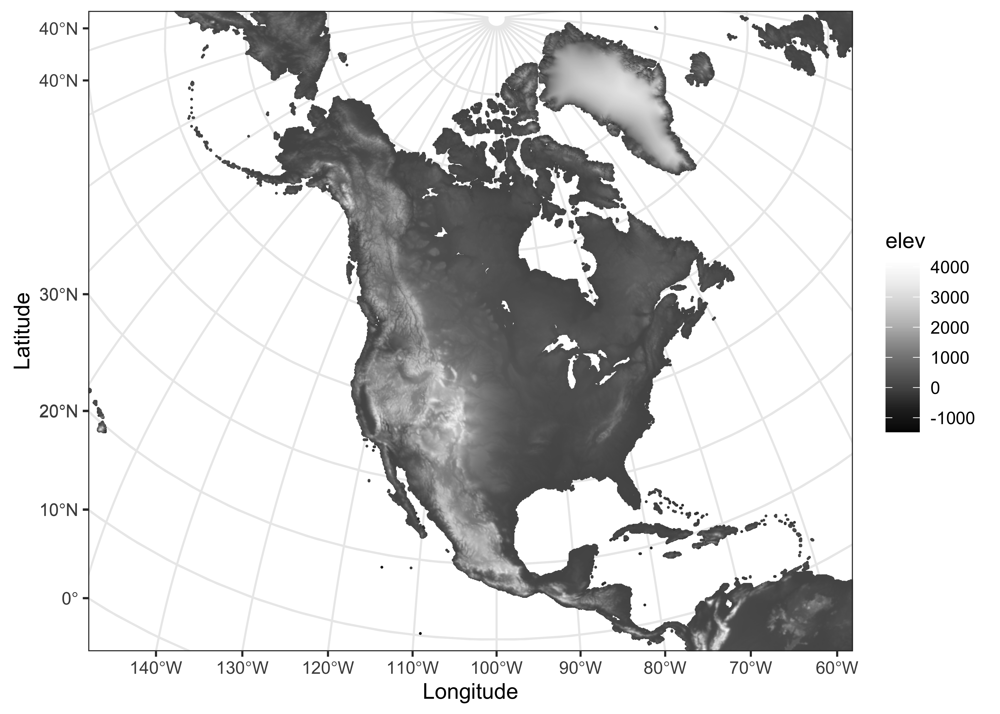

Geospatial analysis in R
NOTE: This page has been revised for Spring 2020, but may undergo further edits.
1 Introduction
The sf package (and sp before it), with it’s direct links to the GDAL, GEOS, and PROJ libraries give R a powerful geospatial analysis capability, and at this point in the development of packages and methods for handling spatial, practically anything that can be accomplished in commercial or open-source GIS software can be done in R. Because R is script-oriented, this has the added benefit of reproducibility, inasmuch as scripts can be saved and reused, while analysis done in menu-focused GUIs are not.
The examples here cover some of the typical things one might want to do in a GIS package, with an emphasis on tasks arising in physical geography.
2 Extract data from a raster
This example demonstrates how to extract data from a raster for a set of target points contained in a .csv file. In this case, the raster is the Ramankutty and Foley potential natural vegetation data set (https://www.nelson.wisc.edu/sage/data-and-models/global-land-use/index.php), and the target points are the Global Charcoal Database (GCDv3) site locations (http://www.gpwg.paleofire.org), with the task being to “look up” the vegetation at each site.
Load some packages:
2.1 Read the data sets – source and target
User the raster package to read the vegetation data, which is stored in a “netCDF” file, a self-documenting, machine-independent format that a lot of Earth-system science data (like climate-model output, or satellite remote-sensing data) are stored in. Note that the ncdf4 package is automatically loaded if the source file is a netCDF file.
# read potential natural vegetation data sage_veg30.nc:
# modify the following path to reflect local files
vegtype_path <- "/Users/bartlein/Documents/geog495/data/nc_files/"
vegtype_name <- "sage_veg30.nc"
vegtype_file <- paste(vegtype_path, vegtype_name, sep="")
vegtype <- raster(vegtype_file, varname="vegtype")## Loading required namespace: ncdf4## class : RasterLayer
## dimensions : 360, 720, 259200 (nrow, ncol, ncell)
## resolution : 0.5, 0.5 (x, y)
## extent : -180, 180, -90, 90 (xmin, xmax, ymin, ymax)
## crs : +proj=longlat +datum=WGS84 +ellps=WGS84 +towgs84=0,0,0
## source : /Users/bartlein/Documents/geog495/data/nc_files/sage_veg30.nc
## names : vegetation.type
## zvar : vegtypePlot the vegetation data using a rasterVis levelplot:
mapTheme <- rasterTheme(region=rev(brewer.pal(8,"Greens")))
levelplot(vegtype, margin=FALSE, par.settings=mapTheme,
main="Potential Natural Vegetation")
Read the charcoal data locations:
# read GCDv3 sites
# modify the following path to reflect local files
csv_path <- "/Users/bartlein/Dropbox/DataVis/working/data/csv_files/"
csv_name <- "v3i_nsa_globe.csv"
csv_file <- paste(csv_path, csv_name, sep="")
gcdv3 <- read.csv(csv_file)
str(gcdv3)## 'data.frame': 703 obs. of 6 variables:
## $ Site_ID : int 1 2 3 4 5 6 7 8 9 10 ...
## $ Lat : num 44.7 44.9 45.7 45.9 46.3 ...
## $ Lon : num -111 -110 -115 -114 -115 ...
## $ Elev : num 2530 1884 2250 2300 1770 ...
## $ depo_context: Factor w/ 12 levels "BOSE","BUOR",..: 7 7 7 7 7 7 7 7 7 7 ...
## $ Site_Name : Factor w/ 703 levels "17940 core","7-M",..: 130 605 75 33 219 530 179 62 55 97 ...
In order to use the extract() function from raster, the target points must be turned into a sf object data set.
## [1] "sf" "data.frame"## Simple feature collection with 703 features and 4 fields
## geometry type: POINT
## dimension: XY
## bbox: xmin: -179.51 ymin: -54.88333 xmax: 179.5 ymax: 69.3833
## epsg (SRID): NA
## proj4string: NA
## First 10 features:
## Site_ID Elev depo_context Site_Name geometry
## 1 1 2530 LASE Cygnet POINT (-110.6161 44.6628)
## 2 2 1884 LASE Slough Creek Pond POINT (-110.3467 44.9183)
## 3 3 2250 LASE Burnt Knob POINT (-114.9867 45.7044)
## 4 4 2300 LASE Baker POINT (-114.2619 45.8919)
## 5 5 1770 LASE Hoodoo POINT (-114.6503 46.3206)
## 6 6 1921 LASE Pintlar POINT (-113.4403 45.8406)
## 7 7 1006 LASE Foy POINT (-114.3592 48.1658)
## 8 8 1637 LASE Bolan POINT (-123.46 42.02)
## 9 9 1921 LASE Bluff POINT (-122.5575 41.3467)
## 10 10 1740 LASE Cedar POINT (-122.4954 41.2075)Add the CRS:
Plot the target points on top of ths source map. The as_Spatial() function converts an sf object to a sp spatial-data type on the fly.
plt <- levelplot(vegtype, margin=FALSE, par.settings=mapTheme,
main="Potential Natural Vegetation")
plt + layer(sp.points(as_Spatial(gcdv3_sf), col="blue", pch=16, cex=0.5))
2.2 Extract data at target points
Now extract the data for the target points:
# extract data from the raster at the target points
gcdv3_vegtype <- extract(vegtype, gcdv3_sf, method="simple")
class(gcdv3_vegtype)## [1] "numeric"## [1] 6 6 6 6 6 6Make a dataframe of the extracted data that could be saved as a .csv file, and plot it:
pts <- data.frame(gcdv3$Lon, gcdv3$Lat, gcdv3_vegtype)
names(pts) <- c("Lon", "Lat", "vegtype")
head(pts, 10)## Lon Lat vegtype
## 1 -110.6161 44.6628 6
## 2 -110.3467 44.9183 6
## 3 -114.9867 45.7044 6
## 4 -114.2619 45.8919 6
## 5 -114.6503 46.3206 6
## 6 -113.4403 45.8406 6
## 7 -114.3592 48.1658 6
## 8 -123.4600 42.0200 4
## 9 -122.5575 41.3467 6
## 10 -122.4954 41.2075 4plotclr <- rev(brewer.pal(8,"Greens"))
plotclr <- c("#AAAAAA", plotclr)
cutpts <- c(0, 2, 4, 6, 8, 10, 12, 14, 16)
color_class <- findInterval(gcdv3_vegtype, cutpts)
plot(pts$Lon, pts$Lat, col=plotclr[color_class+1], pch=16)
Plot the extracted data at the target points on top of the source points. If the extraction is successful, the target-point colors should dissappear against the background.
plt <- levelplot(vegtype, margin=FALSE, par.settings=mapTheme,
main="Potential Natural Vegetation")
plotclr <- rev(brewer.pal(8,"Greens"))
cutpts <- c(0, 2, 4, 6, 8, 10, 12, 14, 16)
color_class <- findInterval(gcdv3_vegtype, cutpts)
plt + layer(sp.points(as_Spatial(gcdv3_sf), col=plotclr[color_class], pch=16, cex=0.6)) +
layer(sp.points(as_Spatial(gcdv3_sf), col="black", pch=1, cex=0.6))
Looks ok.
2.3 A second example – explicit cell selection
Here’s a second example of extracting values from an array, by referencing the specific cell or array element that a target point falls in. In this example, a netCDF file of bioclimatic variables is read using ncdf4 and the values of mtco (mean temperature of the coldest month) are extracted.
# set path and filename
# modify the following path to reflect local files
ncpath <- "/Users/bartlein/Documents/geog495/data/nc_files/"
ncname <- "cru10min30_bio.nc"
ncfname <- paste(ncpath, ncname, sep="")## File /Users/bartlein/Documents/geog495/data/nc_files/cru10min30_bio.nc (NC_FORMAT_CLASSIC):
##
## 19 variables (excluding dimension variables):
## float climatology_bounds[nv,time]
## float gdd0[lon,lat]
## name: gdd0
## long_name: Growing-degree days, 0C base
## units: degdays
## _FillValue: -99
## float gdd5[lon,lat]
## name: gdd5
## long_name: Growing-degree days, 5C base
## units: degdays
## _FillValue: -99
## float chill[lon,lat]
## name: chill
## long_name: Number of days below 5C
## units: days
## _FillValue: -99
## float mtco[lon,lat]
## name: mtco
## long_name: Mean temperature coldest month
## units: C
## _FillValue: -99
## float mtwa[lon,lat]
## name: mtwa
## long_name: Mean temperature warmest month
## units: C
## _FillValue: -99
## float mipt[lon,lat]
## name: mipt
## long_name: Priestley-Taylor (alpha) parameter (AE/PE)
## units: ratio
## _FillValue: -99
## float aaetpt[lon,lat]
## name: aaetpt
## long_name: Actual evapotranspiration (AE)
## units: mm
## _FillValue: -99
## float apetpt[lon,lat]
## name: apetpt
## long_name: Potential evapotranspiration (PE)
## units: mm
## _FillValue: -99
## float miptever[lon,lat]
## name: miptever
## long_name: Alpha -- evergreen assimilation period
## units: ratio
## _FillValue: -99
## float aaetever[lon,lat]
## name: aaetever
## long_name: AE -- evergreen assimilation period
## units: mm
## _FillValue: -99
## float apetever[lon,lat]
## name: apetever
## long_name: PE -- evergreen assimilation period
## units: mm
## _FillValue: -99
## float miptdecd[lon,lat]
## name: miptdecd
## long_name: Alpha -- deciduous ssimilation period
## units: ratio
## _FillValue: -99
## float aaetdecd[lon,lat]
## name: aaetdecd
## long_name: AE -- deciduous assimilation period
## units: mm
## _FillValue: -99
## float apetdecd[lon,lat]
## name: apetdecd
## long_name: PE -- deciduous assimilation period
## units: mm
## _FillValue: -99
## float totsnpt[lon,lat]
## name: totsnpt
## long_name: Total snow (from surface water balance)
## units: mm
## _FillValue: -99
## float apr[lon,lat]
## name: apr
## long_name: Annual precipitation (mm)
## units: mm
## _FillValue: -99
## float pjanpann[lon,lat]
## name: pjanpann
## long_name: January/Annual precipitation ratio
## units: ratio
## _FillValue: -99
## float pjulpann[lon,lat]
## name: pjulpann
## long_name: July/Annual precipitation ratio
## units: ratio
## _FillValue: -99
##
## 4 dimensions:
## lon Size:720
## standard_name: longitude
## long_name: longitude
## units: degrees_east
## axis: X
## lat Size:360
## standard_name: latitude
## long_name: latitude
## units: degrees_north
## axis: Y
## time Size:12
## standard_name: time
## long_name: time
## units: days since 1900-01-01 00:00:00.0 -0:00
## axis: T
## calendar: standard
## climatology: climatology_bounds
## nv Size:2
## [1] "vobjtovarid4: **** WARNING **** I was asked to get a varid for dimension named nv BUT this dimension HAS NO DIMVAR! Code will probably fail at this point"
##
## 3 global attributes:
## source: calculated using Sarah Shafer's version of bioclim.f
## data: e:\Projects\cru\work\cl_2.0_regrid\regions\cru10min30\cru10min30_bio.dat
## history: P.J. Bartlein, 6 Dec 2007 from 2 Dec 2006 data## [1] -179.75 -179.25 -178.75 -178.25 -177.75 -177.25## [1] -89.75 -89.25 -88.75 -88.25 -87.75 -87.25## [1] 720 360# get the mtco data
mtco <- ncvar_get(ncin,"mtco")
dlname <- ncatt_get(ncin,"mtco","long_name")
dunits <- ncatt_get(ncin,"mtco","units")
fillvalue <- ncatt_get(ncin,"mtco","_FillValue")
dim(mtco)## [1] 720 360Close the netCDF file using the nc_close() function.
Plot the control data.
# levelplot of the slice
grid <- expand.grid(lon=lon, lat=lat)
cutpts <- c(-50,-40,-30,-20,-10,0,10,20,30,40,50)
levelplot(mtco ~ lon * lat, data=grid, at=cutpts, cuts=11, pretty=TRUE,
col.regions=(rev(brewer.pal(10,"RdBu"))))
Now extract the data for the target points:
Get the indices (j’s and k’s) of the grid cell that each target point lies in. For each target point, figure out which column (j) and row (k) a target point falls in. This code is basically the same as that used in reshaping a “short” data frame into an array. The function that is defined and executed within the sapply() function figures out which column (j) and row (‘k’) in the control-data array a target point falls in. The j’s and k’s together describe the control-data grid cells the individual target points fall in.
j <- sapply(gcdv3$Lon, function(x) which.min(abs(lon-x)))
k <- sapply(gcdv3$Lat, function(x) which.min(abs(lat-x)))
head(cbind(j,k)); tail(cbind(j,k))## j k
## [1,] 139 270
## [2,] 140 270
## [3,] 131 272
## [4,] 132 272
## [5,] 131 273
## [6,] 134 272## j k
## [698,] 219 218
## [699,] 219 218
## [700,] 115 271
## [701,] 114 269
## [702,] 115 269
## [703,] 123 277Get the data for each j, k combination. The way to do this is the convert the mtco array to a vector, and then calculate an index jk for each target value:
mtco_vec <- as.vector(mtco)
jk <- (k-1)*nlon + j
gcdv3_mtco <- mtco_vec[jk]
head(cbind(j,k,jk,gcdv3_mtco,lon[j],lat[k]))## j k jk gcdv3_mtco
## [1,] 139 270 193819 -11.4 -110.75 44.75
## [2,] 140 270 193820 -10.7 -110.25 44.75
## [3,] 131 272 195251 -6.3 -114.75 45.75
## [4,] 132 272 195252 -6.4 -114.25 45.75
## [5,] 131 273 195971 -5.8 -114.75 46.25
## [6,] 134 272 195254 -6.6 -113.25 45.75gcdv3_mtco[is.na(gcdv3_mtco)] <- -99
pts <- data.frame(gcdv3$Lon, gcdv3$Lat, gcdv3_mtco)
names(pts) <- c("Lon", "Lat", "mtco")
head(pts, 20)## Lon Lat mtco
## 1 -110.6161 44.66280 -11.4
## 2 -110.3467 44.91830 -10.7
## 3 -114.9867 45.70440 -6.3
## 4 -114.2619 45.89190 -6.4
## 5 -114.6503 46.32060 -5.8
## 6 -113.4403 45.84060 -6.6
## 7 -114.3592 48.16580 -6.3
## 8 -123.4600 42.02000 3.3
## 9 -122.5575 41.34670 -0.6
## 10 -122.4954 41.20750 0.5
## 11 -122.5778 41.38360 -0.6
## 12 -122.5092 41.19130 -0.6
## 13 -110.1700 44.28000 -11.2
## 14 -123.5792 45.82420 4.4
## 15 -123.9067 46.10060 4.9
## 16 -119.9767 33.95639 -99.0
## 17 -127.0500 65.21667 -27.9
## 18 -108.1500 37.41667 -4.6
## 19 -105.5000 37.55000 -6.9
## 20 -112.2167 36.71667 -2.7Plot the extracted values of mtco. To do this, the colors for plotting the different levels of mtco are generated from and RColorBrewer palette, and augmented by gray ("#AAAAAA") to handle missing values (i.e. from marine charcoal records, or those from sites “off” the cru10min30 grid).

3 Clipping/Trimming/Point-in-polygon analyses
A common problem arises in dealing with spatial data is the “clipping” or “trimming” problem, in which one wants to know whether one or more points lie within the outlines of a particular polygon, or in the case of multiple polygons, which polygon an individual point lies in. More formally, this is known as the “point in polygon” problem. Here the process of clipping the na_10km_v2 climate grid to a tree-species shape file, in particular, that for Picea mariana (black spruce) is demonstrated. What we want is a list of climate data set points that lie withing the range of P. mariana.
3.1 Read the polygon and target-point files
Read the shapefile for Picea mariana
# read the shape file for Picea Mariana
# modify the following path to reflect local files
shp_file <- "/Users/bartlein/Documents/geog495/data/shp/picemari.shp"
picea_sf <- st_read(shp_file)## Reading layer `picemari' from data source `/Users/bartlein/Documents/geog495/data/shp/picemari.shp' using driver `ESRI Shapefile'
## Simple feature collection with 1585 features and 5 fields
## geometry type: POLYGON
## dimension: XY
## bbox: xmin: -161.9129 ymin: 40.52763 xmax: -52.63629 ymax: 69.51231
## epsg (SRID): 4326
## proj4string: +proj=longlat +ellps=WGS84 +no_defs## Simple feature collection with 1585 features and 5 fields
## geometry type: POLYGON
## dimension: XY
## bbox: xmin: -161.9129 ymin: 40.52763 xmax: -52.63629 ymax: 69.51231
## epsg (SRID): 4326
## proj4string: +proj=longlat +ellps=WGS84 +no_defs
## First 10 features:
## AREA PERIMETER PICEMARI_ PICEMARI_I CODE geometry
## 1 921.9928589 860.791260 2 3 1 POLYGON ((-144.2306 67.7888...
## 2 1.3361486 5.519761 3 14 0 POLYGON ((-140.3131 67.1583...
## 3 5.8179188 25.570114 4 31 0 POLYGON ((-120.3523 66.7756...
## 4 0.4043011 3.741557 5 10 0 POLYGON ((-149.3351 66.8433...
## 5 0.2564854 2.388640 6 32 0 POLYGON ((-115.4912 66.5376...
## 6 0.1642477 2.184623 7 7 0 POLYGON ((-152.4227 66.2011...
## 7 0.3318646 2.666091 8 33 0 POLYGON ((-116.3629 66.2412...
## 8 0.2938177 3.306233 9 18 0 POLYGON ((-139.8788 66.2166...
## 9 0.2452402 2.254334 10 16 0 POLYGON ((-142.4661 65.8544...
## 10 30.8434772 69.847275 11 25 0 POLYGON ((-139.5941 64.5725...Plot the outline.

Read the na10km_v2 points as a .csv file (for illustration, in practice it would be more efficient to read it as a netCDF file). This file contains the grid-point locations of a present-day climate data set, and we want a list of the points that fall within the range limits of Picea mariana.
# read the na10km_v2 points (as a .csv file)
csv_file <- "/Users/bartlein/Documents/geog495/data/csv/na10km_v2.csv"
na10km_v2 <- read.csv(csv_file)
str(na10km_v2)## 'data.frame': 277910 obs. of 7 variables:
## $ x : num 2690000 2700000 2710000 2720000 2730000 2740000 2750000 2760000 2770000 2780000 ...
## $ y : num -4510000 -4510000 -4510000 -4510000 -4510000 -4510000 -4510000 -4510000 -4510000 -4510000 ...
## $ lon : num -77.3 -77.2 -77.1 -77 -77 ...
## $ lat : num 5.12 5.1 5.08 5.05 5.03 ...
## $ mask : int 1 1 1 1 1 1 1 1 1 1 ...
## $ etopo1: int 67 61 67 26 43 56 30 57 134 652 ...
## $ srtm30: int 78 39 52 22 79 49 32 50 110 318 ...We don’t need data from east of 45 W, so trim the data set.
## 'data.frame': 248613 obs. of 7 variables:
## $ x : num 2690000 2700000 2710000 2720000 2730000 2740000 2750000 2760000 2770000 2780000 ...
## $ y : num -4510000 -4510000 -4510000 -4510000 -4510000 -4510000 -4510000 -4510000 -4510000 -4510000 ...
## $ lon : num -77.3 -77.2 -77.1 -77 -77 ...
## $ lat : num 5.12 5.1 5.08 5.05 5.03 ...
## $ mask : int 1 1 1 1 1 1 1 1 1 1 ...
## $ etopo1: int 67 61 67 26 43 56 30 57 134 652 ...
## $ srtm30: int 78 39 52 22 79 49 32 50 110 318 ...Make an sf object of the na10km_v2 data-point locations, and plot it:
# make an sf object
na10km_v2_sf <- st_as_sf(na10km_v2, coords = c("lon", "lat"))
st_crs(na10km_v2_sf) <- st_crs("+proj=longlat")
na10km_v2_sf## Simple feature collection with 248613 features and 5 fields
## geometry type: POINT
## dimension: XY
## bbox: xmin: -179.9993 ymin: -2.872654 xmax: -45.00111 ymax: 83.10293
## epsg (SRID): 4326
## proj4string: +proj=longlat +ellps=WGS84 +no_defs
## First 10 features:
## x y mask etopo1 srtm30 geometry
## 1 2690000 -4510000 1 67 78 POINT (-77.29202 5.124395)
## 2 2700000 -4510000 1 61 39 POINT (-77.20858 5.099891)
## 3 2710000 -4510000 1 67 52 POINT (-77.12515 5.075297)
## 4 2720000 -4510000 1 26 22 POINT (-77.04173 5.050615)
## 5 2730000 -4510000 1 43 79 POINT (-76.95832 5.025843)
## 6 2740000 -4510000 1 56 49 POINT (-76.87492 5.000983)
## 7 2750000 -4510000 1 30 32 POINT (-76.79153 4.976033)
## 8 2760000 -4510000 1 57 50 POINT (-76.70814 4.950995)
## 9 2770000 -4510000 1 134 110 POINT (-76.62476 4.925868)
## 10 2780000 -4510000 1 652 318 POINT (-76.5414 4.900651)
3.2 Overlay the points onto the polygons
Now overlay the points onto the polygons. The st_join() function can take a little while to run.
## although coordinates are longitude/latitude, st_intersects assumes that they are planar
## although coordinates are longitude/latitude, st_intersects assumes that they are planar## Simple feature collection with 70552 features and 10 fields
## geometry type: POINT
## dimension: XY
## bbox: xmin: -161.9001 ymin: 40.54691 xmax: -52.73005 ymax: 69.48275
## epsg (SRID): 4326
## proj4string: +proj=longlat +ellps=WGS84 +no_defs
## First 10 features:
## x y mask etopo1 srtm30 AREA PERIMETER PICEMARI_ PICEMARI_I CODE
## 101155 1860000 -780000 1 349 452 0.089939743 1.0763220 1586 1585 1
## 101552 1850000 -770000 1 286 269 0.089939743 1.0763220 1586 1585 1
## 101553 1860000 -770000 1 352 275 0.089939743 1.0763220 1586 1585 1
## 101554 1870000 -770000 1 256 189 0.089939743 1.0763220 1586 1585 1
## 101948 1850000 -760000 1 535 608 0.089939743 1.0763220 1586 1585 1
## 101949 1860000 -760000 1 517 559 0.089939743 1.0763220 1586 1585 1
## 101950 1870000 -760000 1 247 248 0.089939743 1.0763220 1586 1585 1
## 102342 1850000 -750000 1 399 486 0.089939743 1.0763220 1586 1585 1
## 102343 1860000 -750000 1 371 395 0.089939743 1.0763220 1586 1585 1
## 103450 860000 -720000 1 325 313 0.006225834 0.2851134 1571 1582 1
## geometry
## 101155 POINT (-77.76083 40.54691)
## 101552 POINT (-77.84412 40.6586)
## 101553 POINT (-77.72967 40.63295)
## 101554 POINT (-77.61531 40.60716)
## 101948 POINT (-77.81298 40.74465)
## 101949 POINT (-77.6984 40.71896)
## 101950 POINT (-77.58389 40.69314)
## 102342 POINT (-77.78172 40.83068)
## 102343 POINT (-77.667 40.80495)
## 103450 POINT (-89.43515 42.9867)The warning although coordinates are longitude/latitude, st_intersects assumes that they are planar arises because in fact, longitude and latitude are anisotropic, and it would be better to do this with projected data with isotropic coordinates (i.e. x- and y- coordinates in metres.)
plot(st_geometry(na10km_v2_sf), pch=16, cex=0.2, axes=TRUE)
plot(st_geometry(picea_pts_sf), pch=16, cex=0.2, col="green", add=TRUE)
4 Gridding or rasterizing point data
Another common task is to grid or rasterize a set of point data, creating a gridded data set of counts, averages, minima, maxima, etc. This can be illustrated using the FPA-FOD daily fire-fire start data set: Spatial wildfire occurrence data for the United States, 1992-2013/Fire Program Analysis Fire-Occurrence Database [FPA_FOD_20150323] (3nd Edition) (Short, K.C., 2014, Earth Syst. Sci. Data, 6, 1-27) – http://www.fs.usda.gov/rds/archive/Product/RDS-2013-0009.3/. The idea here is to calculate the number and average area of the fires that occured in 0.5-degree grid cells that cover the coterminous U.S.
The analysis here uses an approach from the sp package.
4.1 Read the data sets, and create empty rasters
Read the fire-start data:
# read the FPA-FOD fire-start data
# modify the following path to reflect local files
csv_path <- "/Users/bartlein/Dropbox/DataVis/working/data/csv_files/"
csv_name <- "fpafod_1992-2013.csv"
csv_file <- paste(csv_path, csv_name, sep="")
fpafod <- read.csv(csv_file) # takes a while
str(fpafod)## 'data.frame': 1727476 obs. of 14 variables:
## $ datasource : Factor w/ 1 level "fpafod": 1 1 1 1 1 1 1 1 1 1 ...
## $ sourceid : int 1 2 3 4 5 6 7 8 9 10 ...
## $ latitude : num 40 38.9 39 38.6 38.6 ...
## $ longitude : num -121 -120 -121 -120 -120 ...
## $ year : int 2005 2004 2004 2004 2004 2004 2004 2005 2005 2004 ...
## $ mon : int 2 5 5 6 6 6 7 3 3 7 ...
## $ day : int 2 12 31 28 28 30 1 8 15 1 ...
## $ daynum : int 33 133 152 180 180 182 183 67 74 183 ...
## $ area_ha : num 0.0405 0.1012 0.0405 0.0405 0.0405 ...
## $ cause_original: int 9 1 5 1 1 1 1 5 5 1 ...
## $ cause1 : int 2 1 2 1 1 1 1 2 2 1 ...
## $ cause2 : int 8 1 5 1 1 1 1 5 5 1 ...
## $ stateprov : Factor w/ 52 levels "AK","AL","AR",..: 5 5 5 5 5 5 5 5 5 5 ...
## $ agency : Factor w/ 11 levels "BIA","BLM","BOR",..: 6 6 6 6 6 6 6 6 6 6 ...Convert the fire-start data to a SpatialPointsDataFrame
fpafod_coords <- cbind(fpafod$longitude, fpafod$latitude)
fpafod_pts <- SpatialPointsDataFrame(coords=fpafod_coords, data=data.frame(fpafod$area_ha))
names(fpafod_pts) <- "area_ha"Create a couple of empty rasters to hold the rasterized data:
# create (empty) rasters
cell_size <- 0.5
lon_min <- -128.0; lon_max <- -65.0; lat_min <- 25.5; lat_max <- 50.5
ncols <- ((lon_max - lon_min)/cell_size)+1; nrows <- ((lat_max - lat_min)/cell_size)+1
us_fire_counts <- raster(nrows=nrows, ncols=ncols, xmn=lon_min, xmx=lon_max, ymn=lat_min, ymx=lat_max, res=0.5, crs="+proj=longlat +datum=WGS84")
us_fire_counts## class : RasterLayer
## dimensions : 50, 126, 6300 (nrow, ncol, ncell)
## resolution : 0.5, 0.5 (x, y)
## extent : -128, -65, 25.5, 50.5 (xmin, xmax, ymin, ymax)
## crs : +proj=longlat +datum=WGS84 +ellps=WGS84 +towgs84=0,0,0us_fire_area <- raster(nrows=nrows, ncols=ncols, xmn=lon_min, xmx=lon_max, ymn=lat_min, ymx=lat_max, res=0.5, crs="+proj=longlat +datum=WGS84")
us_fire_area## class : RasterLayer
## dimensions : 50, 126, 6300 (nrow, ncol, ncell)
## resolution : 0.5, 0.5 (x, y)
## extent : -128, -65, 25.5, 50.5 (xmin, xmax, ymin, ymax)
## crs : +proj=longlat +datum=WGS84 +ellps=WGS84 +towgs84=0,0,04.2 Rasterize the data
Now rasterize the data, first as counts (number of fires in each grid cell), and then as the average size of the fires in each grid cell. Also plot the data (both on a log10 scale:
## class : RasterLayer
## dimensions : 50, 126, 6300 (nrow, ncol, ncell)
## resolution : 0.5, 0.5 (x, y)
## extent : -128, -65, 25.5, 50.5 (xmin, xmax, ymin, ymax)
## crs : +proj=longlat +datum=WGS84 +ellps=WGS84 +towgs84=0,0,0
## source : memory
## names : layer
## values : 1, 8755 (min, max)
## class : RasterBrick
## dimensions : 50, 126, 6300, 2 (nrow, ncol, ncell, nlayers)
## resolution : 0.5, 0.5 (x, y)
## extent : -128, -65, 25.5, 50.5 (xmin, xmax, ymin, ymax)
## crs : +proj=longlat +datum=WGS84 +ellps=WGS84 +towgs84=0,0,0
## source : memory
## names : ID, area_ha
## min values : 1.29922e+05, 4.04686e-03
## max values : 1677519.00, 18210.87
4.3 Write the rasterized data out as a netCDF file
Write the two rasterized data sets out as variables in a netCDF data set. Create some variables, and replace the R NAs with netCDF fillvalues:
# make necessary vectors and arrays
lon <- seq(lon_min+0.25, lon_max-0.25, by=cell_size)
lat <- seq(lat_max-0.25, lat_min+0.25, by=-1*cell_size)
print(c(length(lon), length(lat)))## [1] 126 50fillvalue <- 1e32
us_fire_counts2 <- t(as.matrix(us_fire_counts$layer, nrows=ncols, ncols=nrows))
dim(us_fire_counts2)## [1] 126 50us_fire_counts2[is.na(us_fire_counts2)] <- fillvalue
us_fire_area2 <- t(as.matrix(us_fire_area$area_ha, nrows=ncols, ncols=nrows))
dim(us_fire_area2)## [1] 126 50Write out a netCDF file:
# write out a netCDF file
library(ncdf4)
# path and file name, set dname
# modify the following path to reflect local files
ncpath <- "/Users/bartlein/Dropbox/DataVis/working/data/nc_files/"
ncname <- "us_fires.nc"
ncfname <- paste(ncpath, ncname, sep="")
# create and write the netCDF file -- ncdf4 version
# define dimensions
londim <- ncdim_def("lon","degrees_east",as.double(lon))
latdim <- ncdim_def("lat","degrees_north",as.double(lat))
# define variables
dname <- "fpafod_counts"
dlname <- "Number of fires, 1992-2013"
v1_def <- ncvar_def(dname,"1",list(londim,latdim),fillvalue,dlname,prec="single")
dname <- "fpafod_mean_area"
dlname <- "Average Fire Size, 1992-2013"
v2_def <- ncvar_def(dname,"ha",list(londim,latdim),fillvalue,dlname,prec="single")
# create netCDF file and put arrays
ncout <- nc_create(ncfname,list(v1_def, v2_def),force_v4=TRUE)
# put variables
ncvar_put(ncout,v1_def,us_fire_counts2)
ncvar_put(ncout,v2_def,us_fire_area2)
# put additional attributes into dimension and data variables
ncatt_put(ncout,"lon","axis","X")
ncatt_put(ncout,"lat","axis","Y")
# add global attributes
ncatt_put(ncout,0,"title","FPA-FOD Fires")
ncatt_put(ncout,0,"institution","USFS")
ncatt_put(ncout,0,"source","http://www.fs.usda.gov/rds/archive/Product/RDS-2013-0009.3/")
ncatt_put(ncout,0,"references", "Short, K.C., 2014, Earth Syst. Sci. Data, 6, 1-27")
history <- paste("P.J. Bartlein", date(), sep=", ")
ncatt_put(ncout,0,"history",history)
ncatt_put(ncout,0,"Conventions","CF-1.6")
# Get a summary of the created file:
ncout## File /Users/bartlein/Dropbox/DataVis/working/data/nc_files/us_fires.nc (NC_FORMAT_NETCDF4):
##
## 2 variables (excluding dimension variables):
## float fpafod_counts[lon,lat] (Contiguous storage)
## units: 1
## _FillValue: 1.00000003318135e+32
## long_name: Number of fires, 1992-2013
## float fpafod_mean_area[lon,lat] (Contiguous storage)
## units: ha
## _FillValue: 1.00000003318135e+32
## long_name: Average Fire Size, 1992-2013
##
## 2 dimensions:
## lon Size:126
## units: degrees_east
## long_name: lon
## axis: X
## lat Size:50
## units: degrees_north
## long_name: lat
## axis: Y
##
## 6 global attributes:
## title: FPA-FOD Fires
## institution: USFS
## source: http://www.fs.usda.gov/rds/archive/Product/RDS-2013-0009.3/
## references: Short, K.C., 2014, Earth Syst. Sci. Data, 6, 1-27
## history: P.J. Bartlein, Tue Apr 14 11:46:21 2020
## Conventions: CF-1.65 Interpolating/regridding
Another common task involves tranferring values from one gridded data set to another. When the grids are identical, this is trivial, but when the “target” grid is different from the source or “control” grid, this involves interpolation (as does also the case when the target points are irregularly distributed). The most widely used method for interpolation within a control grid is bilinear interpolation, which involves finding the control grid points that surround a particular target point, and then simultaneously (linearlly) interplating in the x- and y-directions. The method is implemented in the raster package, and relatively fast version is implemented in the fields package.
The example here uses a lower-resolution verions of the ETOPO1 global DEM as the source file, and the locations of the (land-only) points in the na10km_v2 grid as the targets. These are read in here from a .csv file, but they also could have come from a netCDF file.
5.1 Open the “control” netCDF and target .csv files
Load the appropriate packages.
## Loading required package: spam## Loading required package: dotCall64## Loading required package: grid## Spam version 2.5-1 (2019-12-12) is loaded.
## Type 'help( Spam)' or 'demo( spam)' for a short introduction
## and overview of this package.
## Help for individual functions is also obtained by adding the
## suffix '.spam' to the function name, e.g. 'help( chol.spam)'.##
## Attaching package: 'spam'## The following objects are masked from 'package:base':
##
## backsolve, forwardsolve## Loading required package: maps## See https://github.com/NCAR/Fields for
## an extensive vignette, other supplements and source codeRead the etopo1 netCDF file. This particular file is one in which the original 30-sec data have been aggregated (by averaging) to six minutes or one-tenth of a degree (to speed up the execution of the examples). In practice, one would work with the original higher resolution data. Do some setup an open the file, and list its contents.
# set path and filename
# modify the following path to reflect local files
ncpath <- "/Users/bartlein/Dropbox/DataVis/working/data/nc_files/"
ncname <- "etopo1_ig_06min.nc"
ncfname <- paste(ncpath, ncname, sep="")
dname <- "elev"## File /Users/bartlein/Dropbox/DataVis/working/data/nc_files/etopo1_ig_06min.nc (NC_FORMAT_CLASSIC):
##
## 1 variables (excluding dimension variables):
## short elev[lon,lat]
## long_name: elevation
## units: m
## valid_min: -10360
## valid_max: 6365
## scale_factor: 1
## add_offset: 0
## _FillValue: -32768
## source: z in etopo1_ig.nc -- averaged
##
## 2 dimensions:
## lon Size:3600
## standard_name: longitude
## long_name: longitude
## units: degrees_east
## axis: X
## lat Size:1800
## standard_name: latitude
## long_name: latitude
## units: degrees_north
## axis: Y
##
## 7 global attributes:
## title: 1-Minute Gridded Global Relief Data (ETOPO1)
## data: grid-registered data -- ETOPO1_Ice_g.grd
## institution: http://www.ngdc.noaa.gov/ngdc.html
## source: http://www.ngdc.noaa.gov/mgg/global/global.html
## history: This file created by P.J. Bartlein, 28 Nov 2008
## comment: average over 7x7 1-min cells
## Conventions: CF-1.0Get the “control” longitudes and latitudes.
## [1] -179.95 -179.85 -179.75 -179.65 -179.55 -179.45## [1] -89.95 -89.85 -89.75 -89.65 -89.55 -89.45## [1] 3600 1800Now read the elevations, and various attributes:
# get elevations
etopo1_array <- ncvar_get(ncin,dname)
dlname <- ncatt_get(ncin,dname,"long_name")
dunits <- ncatt_get(ncin,dname,"units")
fillvalue <- ncatt_get(ncin,dname,"_FillValue")
dsource <- ncatt_get(ncin, "elev", "source")
dim(etopo1_array)## [1] 3600 1800# get global attributes
title <- ncatt_get(ncin,0,"title")
institution <- ncatt_get(ncin,0,"institution")
datasource <- ncatt_get(ncin,0,"source")
history <- ncatt_get(ncin,0,"history")
Conventions <- ncatt_get(ncin,0,"Conventions")Close the netCDF file using the nc_close() function.
Produce a quick map to check that the data make sense. (Always do this!)
# levelplot of elevations
grid <- expand.grid(lon=lon, lat=lat)
cutpts <- c(-7000, -6000, -4000, -2000, 0, 500, 1000, 1500, 2000, 3000, 4000, 5000)
levelplot(etopo1_array ~ lon * lat, data=grid, at=cutpts, cuts=11, pretty=TRUE,
col.regions=topo.colors(12))
Open and read the .csv file containing the “target”" points.
# read na10km_v2 grid-point locations -- land-points only
# modify the following path to reflect local files
csv_path <- "/Users/bartlein/Dropbox/DataVis/working/data/csv_files/"
csv_name <- "na10km_v2_pts.csv"
csv_file <- paste(csv_path, csv_name, sep="")
na10km_v2 <- read.csv(csv_file)
str(na10km_v2)## 'data.frame': 277910 obs. of 5 variables:
## $ x : num 2690000 2700000 2710000 2720000 2730000 2740000 2750000 2760000 2770000 2780000 ...
## $ y : num -4510000 -4510000 -4510000 -4510000 -4510000 -4510000 -4510000 -4510000 -4510000 -4510000 ...
## $ lon : num -77.3 -77.2 -77.1 -77 -77 ...
## $ lat : num 5.12 5.1 5.08 5.05 5.03 ...
## $ mask: int 1 1 1 1 1 1 1 1 1 1 ...Get the number of target points:
## [1] 2779105.2 Interpolation
Set up to do the interpolation. Generate x’s and y’s for the target grid. In practice, these might be read in from a netCDF file. Here we need them to define an array that will hold the interpolated values.
# set dimesions of output array, and define "marginal" x- and y-values
nx <- 1078; ny <- 900
x <- seq(-5770000, 5000000, by=10000)
y <- seq(-4510000, 4480000, by=10000)
# define a vector and array that will contiain the interpolated values
interp_var <- rep(NA, ntarg)
interp_mat <- array(NA, dim=c(nx, ny))Get the array subscripts for each point. This is similar to the work done in reshaping a “short” data frame to an array, as in Week 4
# get array subscripts for each target point
j <- sapply(na10km_v2$x, function(c) which.min(abs(x-c)))
k <- sapply(na10km_v2$y, function(c) which.min(abs(y-c)))
head(cbind(j,k,na10km_v2$lon,na10km_v2$lat))## j k
## [1,] 847 1 -77.29202 5.124395
## [2,] 848 1 -77.20858 5.099891
## [3,] 849 1 -77.12515 5.075297
## [4,] 850 1 -77.04173 5.050615
## [5,] 851 1 -76.95832 5.025843
## [6,] 852 1 -76.87492 5.000983## j k
## [277905,] 1073 900 4.212445 47.09974
## [277906,] 1074 900 4.238897 47.00791
## [277907,] 1075 900 4.265386 46.91605
## [277908,] 1076 900 4.291913 46.82415
## [277909,] 1077 900 4.318477 46.73222
## [277910,] 1078 900 4.345078 46.64025Now do bilinear interpolation using the fields package:
# bilinear interpolation from fields package
control_dat <- list(x=lon, y=lat, z=etopo1_array)
interp_var <- interp.surface(control_dat, cbind(na10km_v2$lon,na10km_v2$lat))
# put interpolated values into a 2-d array
interp_mat[cbind(j,k)] <- interp_var[1:ntarg]Get a quick map:
grid <- expand.grid(x=x, y=y)
cutpts <- c(-7000, -6000, -4000, -2000, 0, 500, 1000, 1500, 2000, 3000, 4000, 5000)
levelplot(interp_mat ~ x * y, data=grid, at=cutpts, cuts=11, pretty=TRUE,
col.regions=topo.colors(12))
At this point, interp_mat could be written out as a variable in a netCDF file (along with dimension and attribute data). It is also possible to make a data frame of the interpolated data, which could be written out as a .csv file:
# make a dataframe of the interpolated elevations
out_df <- data.frame(cbind(na10km_v2$x, na10km_v2$y, na10km_v2$lon, na10km_v2$lat, interp_var))
names(out_df) <- c("x", "y", "lon", "lat", "elev")
head(out_df); tail(out_df)## x y lon lat elev
## 1 2690000 -4510000 -77.29202 5.124395 64.91837
## 2 2700000 -4510000 -77.20858 5.099891 87.74857
## 3 2710000 -4510000 -77.12515 5.075297 69.43258
## 4 2720000 -4510000 -77.04173 5.050615 52.84844
## 5 2730000 -4510000 -76.95832 5.025843 54.49635
## 6 2740000 -4510000 -76.87492 5.000983 54.86496## x y lon lat elev
## 277905 4950000 4480000 4.212445 47.09974 471.2087
## 277906 4960000 4480000 4.238897 47.00791 383.3458
## 277907 4970000 4480000 4.265386 46.91605 381.3808
## 277908 4980000 4480000 4.291913 46.82415 404.7478
## 277909 4990000 4480000 4.318477 46.73222 345.8679
## 277910 5000000 4480000 4.345078 46.64025 313.1289A quick ggplot2 map can be made:
##
## Attaching package: 'ggplot2'## The following object is masked from 'package:latticeExtra':
##
## layerggplot(data = out_df, aes(x = x, y = y)) +
geom_tile(aes(fill = interp_var)) +
scale_fill_gradientn(colors = terrain.colors(12)) +
theme_bw()
There are two things about this map: The first is that the yellow/green color scheme generated by the terrain.colors() function will not be interpretable by many color-deficient viewers. The second is that although plotting the data relative to the projected x- and y-values gives a map that “looks right”, it is not obvious how to put a longitude by latitude graticule on the maps.
The solution is to turn the dataframe into an sf object, using the projected x- and y-values as coordinates, and adding the approprite coordinate reference system values.
## Simple feature collection with 277910 features and 3 fields
## geometry type: POINT
## dimension: XY
## bbox: xmin: -5730000 ymin: -4510000 xmax: 5e+06 ymax: 4480000
## epsg (SRID): NA
## proj4string: NA
## First 10 features:
## lon lat elev geometry
## 1 -77.29202 5.124395 64.91837 POINT (2690000 -4510000)
## 2 -77.20858 5.099891 87.74857 POINT (2700000 -4510000)
## 3 -77.12515 5.075297 69.43258 POINT (2710000 -4510000)
## 4 -77.04173 5.050615 52.84844 POINT (2720000 -4510000)
## 5 -76.95832 5.025843 54.49635 POINT (2730000 -4510000)
## 6 -76.87492 5.000983 54.86496 POINT (2740000 -4510000)
## 7 -76.79153 4.976033 53.95471 POINT (2750000 -4510000)
## 8 -76.70814 4.950995 66.25254 POINT (2760000 -4510000)
## 9 -76.62476 4.925868 170.84757 POINT (2770000 -4510000)
## 10 -76.54140 4.900651 564.78603 POINT (2780000 -4510000)# add (projected) CRS
st_crs(NA_10km_v2_elev_sf) <-
st_crs("+proj=laea +lon_0=-100` +lat_0=50 +x_0=0 +y_0=0 +ellps=WGS84 +datum=WGS84 +units=m +no_defs")
NA_10km_v2_elev_sf## Simple feature collection with 277910 features and 3 fields
## geometry type: POINT
## dimension: XY
## bbox: xmin: -5730000 ymin: -4510000 xmax: 5e+06 ymax: 4480000
## epsg (SRID): NA
## proj4string: +proj=laea +lat_0=50 +lon_0=-100 +x_0=0 +y_0=0 +datum=WGS84 +units=m +no_defs
## First 10 features:
## lon lat elev geometry
## 1 -77.29202 5.124395 64.91837 POINT (2690000 -4510000)
## 2 -77.20858 5.099891 87.74857 POINT (2700000 -4510000)
## 3 -77.12515 5.075297 69.43258 POINT (2710000 -4510000)
## 4 -77.04173 5.050615 52.84844 POINT (2720000 -4510000)
## 5 -76.95832 5.025843 54.49635 POINT (2730000 -4510000)
## 6 -76.87492 5.000983 54.86496 POINT (2740000 -4510000)
## 7 -76.79153 4.976033 53.95471 POINT (2750000 -4510000)
## 8 -76.70814 4.950995 66.25254 POINT (2760000 -4510000)
## 9 -76.62476 4.925868 170.84757 POINT (2770000 -4510000)
## 10 -76.54140 4.900651 564.78603 POINT (2780000 -4510000)Projected ggplot2 map with a grayscale color scheme:
# ggplot2 map
pal <- rev(brewer.pal(9, "Greys"))
ggplot(data = NA_10km_v2_elev_sf, aes(x = "lon", y = "lat")) +
geom_sf(aes(color = elev), size = .0001) +
scale_color_gradientn(colors = pal) +
labs(x = "Longitude", y = "Latitude") +
scale_x_discrete(breaks = seq(160, 360, by=10)) +
scale_y_discrete(breaks = seq(0, 90, by=10)) +
theme_bw()